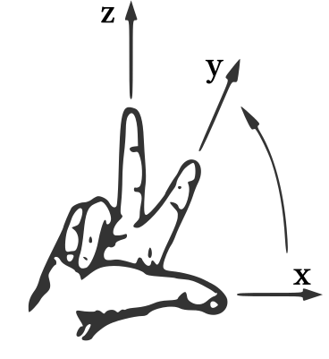

Kapitel 10 Grundlagen der anschaulichen Vektorgeometrie - Abschnitt 10.1 Vom Pfeil zum Vektor
10.1.2 Koordinatensysteme im Raum
Im vorhergehenden Kapitel 9 wurden im Abschnitt 9.1 kartesische Koordinatensysteme und Punkte in der Ebene mit Koordinaten bezüglich dieser Systeme eingeführt. Ein sicherer Umgang mit diesen Konzepten wird hier nun vorausgesetzt. Zur eindeutigen Beschreibung eines Punktes im Raum braucht man drei - statt nur zwei - Koordinaten. Damit benötigt ein Koordinatensystem im Raum ebenfalls drei Achsen, die als -, - und -Achse (oder manchmal auch als -, - und -Achse) bezeichnet werden. Für Punkte werden wieder üblicherweise Großbuchstaben und für ihre Koordinaten Kleinbuchstaben als Variablen verwendet. In Erweiterung der Schreibweise aus Kapitel 9 werden die Koordinaten von Punkten zum Beispiel wie folgt notiert:oder
Hier ist beispielsweise ein Punkt mit der -Koordinate , der -Koordinate und der -Koordinate . Für den Punkt mit den Koordinaten ist die Bezeichnung Ursprung und das Symbol (vom englischen origin) reserviert. Alle diese Punkte sind im folgenden Bild dargestellt:
Die gestrichelten Hilfslinien in diesem Bild geben einen Hinweis darauf, wie in einer solchen dreidimensionalen Darstellung die Koordinaten von Punkten korrekt eingezeichnet und abgelesen werden können. Man beachte, dass die Hilfslinien alle parallel zu den Koordinatenachsen verlaufen.
Es werden nur Koordinatensysteme im Raum betrachtet, deren Achsen alle senkrecht aufeinander stehen. Diese heißen auch kartesische Koordinatensysteme. Es wird hier außerdem die übliche mathematische Konvention benutzt, dass die Koordinatensysteme im Raum rechtshändig oder sogenannte Rechtssysteme sein sollen. Dies bedeutet, dass die positiven Achsenrichtungen von -, - und -Achse durch die Drei-Finger-Regel der rechten Hand bestimmt werden:

Trotzdem gibt es hier noch unterschiedliche mögliche Darstellungsformen: zum Beispiel ein Verlauf der -Achse nach rechts, der -Achse nach oben und der -Achse nach vorne aus der Zeichenebene heraus - wie im Koordinatensystem mit den Punkten und oben - oder ein Verlauf der -Achse nach rechts, der -Achse nach hinten in die Zeichenebene hinein und der -Achse nach oben - wie im Drei-Finger-Bild oben. Die Rechtshändigkeit ist aber in beiden Fällen gegeben.
Aufgabe 10.1.1
Geben Sie die Koordinaten der im folgenden Bild eingezeichneten Punkte an. Überlegen Sie sich außerdem, wie man alle eingezeichneten Punkte zu einem mathematischen Objekt zusammenfassen kann.
Geben Sie die Koordinaten der im folgenden Bild eingezeichneten Punkte an. Überlegen Sie sich außerdem, wie man alle eingezeichneten Punkte zu einem mathematischen Objekt zusammenfassen kann.
 .
.
-
.
-
.
-
.
-
.
Analog zum zweidimensionalen Fall in Abschnitt 9.1.2 kann man also auch hier im dreidimensionalen Fall eine beliebige Anzahl von Punkten im Raum wieder zu einer Punktmenge zusammenfassen. Insbesondere gibt es auch hier wieder die folgende Bezeichnung:
Info
10.1.2
Die Menge aller Punkte im Raum, als Koordinatentripel bezüglich eines gegebenen kartesischen Koordinatensystems, wird mit
bezeichnet. Das Symbol wird dabei als „ drei“oder „ hoch drei“ gesprochen. Dies spiegelt wieder, dass jeder Punkt eindeutig durch ein Koordinatentripel, bestehend aus drei reellen Zahlen, beschrieben werden kann.
Die Menge aller Punkte im Raum, als Koordinatentripel bezüglich eines gegebenen kartesischen Koordinatensystems, wird mit
bezeichnet. Das Symbol wird dabei als „ drei“oder „ hoch drei“ gesprochen. Dies spiegelt wieder, dass jeder Punkt eindeutig durch ein Koordinatentripel, bestehend aus drei reellen Zahlen, beschrieben werden kann.